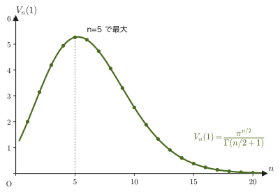
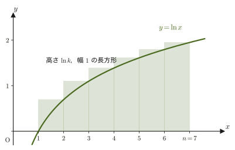
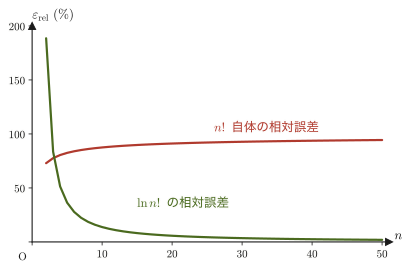
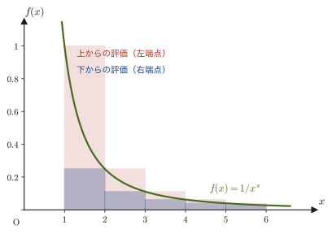
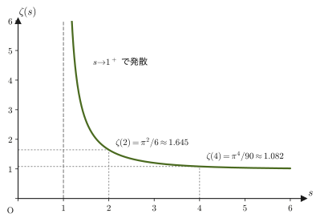
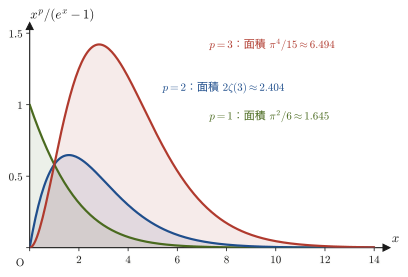
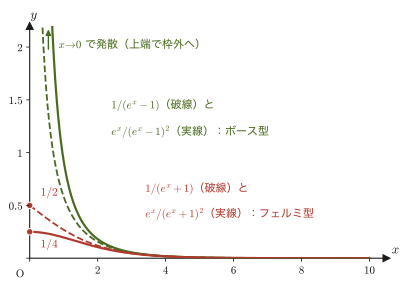

第47章統計力学のための数学 — n次元球・スターリングの公式・ゼータ関数
統計力学が相手にする物体は，気体1molあたり $N_{\mathrm A}\approx6.02\times10^{23}$ 個という，直感の効かない桁数の粒子の集まりである．たとえば $N$ 個の粒子の位置と運動量をすべて並べると，$6N$ 個の実数の組——つまり$6N$ 次元の空間の1点——になる．そのような超高次元の空間で「エネルギーがある値以下の状態がどれだけあるか」を数えるには，円の面積や球の体積の公式を $n$ 次元に一般化しておく必要がある．また，$N!$（$N\sim10^{23}$）のように，電卓でも筆算でも扱えない大きさの数の対数を具体的に評価する近似式（スターリングの公式）も欠かせない．
さらに，原子の振動や電磁波・音波の「モード」（波の振動のしかた1通りのこと）ごとにエネルギーを足し上げていくと，$\sum_k 1/k^s$ という形の無限級数——ゼータ関数——や，$\displaystyle\int_0^\infty x^{s-1}/(e^x\mp1)\,\dd x$ という形の積分が自然に現れる．
本章は，これらの数学の道具を，使う前に一通り揃えておくための章である（力学や熱力学の第1章が，運動や熱を扱う前に言葉と記法を整えたのと同じ役割で，物理の内容はまだ出てこない）．扱うのは，$n$ 次元球の体積の公式とその証明（$n$ 重のガウス積分を使う，やや技巧的だが美しい道具立て），ガウス積分の一般化，スターリングの公式，ゼータ関数の定義と収束範囲の証明，ゼータ関数を含む積分公式である．あわせて，ガンマ関数の性質の要点（姉妹編「大学数学（AD 02）」第32章の復習），$\zeta(2),\zeta(4),\zeta(3/2),\zeta(3)$ の具体的な値，ボース型・フェルミ型積分の一般公式，そして対数微分と部分積分という「道具箱」も用意する．各道具がどの章で使われるかは，47.5.4節の表47.2にまとめた．
なお，指数関数の底のネイピア数は，本書の統計力学の章でも $e$（$e^x$，$e^{-\beta E}$ の形）と書く．電気素量も $e$ と書くと紛らわしいので，電気素量が現れる場合（第52章の電池の例など）は電気素量を $q$ と書いて区別する．式が長くなるときだけ，指数を $\exp(\cdot)$ と書くこともある．
- 第47章（本章） 統計力学のための数学——$n$ 次元球の体積，スターリングの公式，ゼータ関数．物理の内容にはまだ入らない準備の章．
- 第48章 微視的状態と等重率の原理——位相空間と量子化，エルゴード仮説，ミクロカノニカル分布．理想気体の状態数を，本章の $n$ 次元球の体積で求める最初の場面．
- 第49章 熱力学的重率とボルツマンの原理——$S=k_{\mathrm B}\ln W$．本章の $n$ 次元球の体積とスターリングの公式を使って，理想気体のエントロピーを導く．
- 第50章 カノニカル分布と分配関数——温度が一定に保たれた系の統計力学．本章のガウス型積分と対数微分を使う．
- 第51章 カノニカル分布の応用——理想気体，固体の比熱，常磁性体．本章のガウス型積分とスターリングの公式を使う．
- 第52章 グランドカノニカル分布と量子統計——フェルミ分布とボース分布．本章のボース型・フェルミ型積分公式と $\zeta(3/2)$（ボース＝アインシュタイン凝縮）を使う．
- 第53章 光子とフォノンの統計——黒体放射（シュテファン・ボルツマンの法則）とデバイ模型の比熱．本章の $\zeta(4)$，$\zeta(3)$ とボース型積分公式を直接使う．
- $n$ 次元球の体積の公式 $V_n(R)=\pi^{n/2}R^n/\Gamma(n/2+1)$ を理解し，$n=1,2,3$ の具体例（線分・円・球）で公式の意味を確かめる
- この公式を，$n$ 重のガウス積分を使って実際に証明する（式変形の一行一行の根拠を確認しながら）．あわせて，ガウス型積分 $\int_0^\infty x^{2n}e^{-ax^2}\dd x$ の一般公式を導く
- スターリングの公式 $n!\approx n^ne^{-n}$（$n\gg1$）を，区分求積法を使って導出し，「$n!$ 自体の近似としては粗いが，$\ln n!$ の近似としては優秀である」という統計力学での使い方の要点を理解する
- ゼータ関数 $\zeta(s)=\sum_{k=1}^\infty1/k^s$ の定義と，収束範囲が $s\gt1$ であることの証明（積分による評価）を理解し，$\zeta(2)=\pi^2/6$，$\zeta(4)=\pi^4/90$ の値を導く
- ボース型・フェルミ型の積分公式 $\int_0^\infty x^{s-1}/(e^x\mp1)\,\dd x$ の一般形を導き，対数微分と部分積分の道具を使って $\int_0^\infty x^pe^x/(e^x\mp1)^2\dd x$ へ広げる（ゼータ関数の引数が $p$ になる点に注意）
- $\zeta(3/2)\approx2.612$，$\zeta(3)\approx1.202$ などの具体的な数値を知り，これらが後の章で黒体放射・デバイ模型・ボース＝アインシュタイン凝縮の定数として使われることを予告として理解する
もとにしたノート：望月泰英『物理学ノート 統計力学』 pp. 1–3．
47.1 なぜ「n次元」の数学が必要か — n次元球の体積
高校数学・大学数学で慣れ親しんだ「半径 $R$ の円の面積は $\pi R^2$」「半径 $R$ の球の体積は $\frac43\pi R^3$」という公式を，もう一度よく見てみよう．円は2次元（平面）の図形，球は3次元（空間）の図形である．では，4次元・5次元・……・$n$ 次元の空間で，「原点からの距離が $R$ 以下の点の集まり」（$n$ 次元球）を考えたら，その「体積」（$n$ 次元の体積）はどんな式になるだろうか．
荒唐無稽な問いに聞こえるかもしれないが，これは統計力学では避けて通れない計算になる．たとえば $N$ 個の粒子からなる気体の運動量を $(p_{x1},p_{y1},p_{z1},p_{x2},\ldots,p_{zN})$ という $3N$ 個の実数の組として並べると，「全エネルギーが一定値 $E$ 以下」という条件は，ちょうど $3N$ 次元空間の中の球の内部（原点からの距離が $\sqrt{2mE}$ 以下の領域）を表す．このような領域の体積を求める場面が，第48章・第49章で実際に出てくる．そこで本節では，まず一般の $n$ に対して，次のように $n$ 次元球を定義する．
定義47.1 $n$ 次元球
一般化座標（generalized coordinate．ある物理系の状態を指定する何個かの実数の組で，位置とは限らない．上の気体の例では，運動量の成分 $p_{x1},\ldots,p_{zN}$ を $q_1,\ldots,q_{3N}$ とみなす）を $q_1,q_2,\ldots,q_n$ とする．不等式
$$ q_1^2+q_2^2+\cdots+q_n^2\le R^2 $$を満たす点 $(q_1,\ldots,q_n)$ 全体の集合を，半径 $R$ の$n$ 次元球（$n$-dimensional ball）とよぶ．$n=2$ のときは高校数学でおなじみの円の内部，$n=3$ のときは球の内部にほかならない．
この $n$ 次元球の体積 $V_n(R)$ が，$n=1,2,3$ のときにどうなるかをまず具体例で確認し，次の47.2節でその一般公式を実際に証明する．
例47.1 $n=1,2,3$ での体積の具体例
のちに47.2節で証明する一般公式
$$ V_n(R)=\frac{\pi^{n/2}}{\Gamma\!\left(\dfrac n2+1\right)}R^n $$に，$n=1,2,3$ を代入すると何が得られるか確認しよう．ここで $\Gamma$ はガンマ関数（gamma function，階乗を実数に拡張した関数．大学数学 第32章 32.2節で学んだ．要点は下のボックスで復習する）である．
(i) $n=1$ のとき $\Gamma\!\left(\frac32\right)=\frac12\sqrt\pi$（大学数学 公式32.3・32.4）を使うと，
$$ V_1(R)=\frac{\pi^{1/2}}{\Gamma\!\left(\frac32\right)}R=\frac{\sqrt\pi}{\frac12\sqrt\pi}R=2R $$となり，長さ $2R$ の線分の「長さ」に一致する．
(ii) $n=2$ のとき $\Gamma(2)=1!=1$（公式32.5）より，
$$ V_2(R)=\frac{\pi^{1}}{\Gamma(2)}R^2=\frac{\pi}{1}R^2=\pi R^2 $$となり，高校数学で学んだ円の面積の公式そのものである．
(iii) $n=3$ のとき $\Gamma\!\left(\frac52\right)=\frac34\sqrt\pi$（大学数学 例題32.3）より，
$$ V_3(R)=\frac{\pi^{3/2}}{\Gamma\!\left(\frac52\right)}R^3=\frac{\pi^{3/2}}{\frac34\sqrt\pi}R^3=\frac{\pi}{\frac34}R^3=\frac43\pi R^3 $$となり，これも高校数学で暗記した球の体積の公式に一致する（大学数学 第7章 7.7節では，三重積分を使ってこの $\frac43\pi R^3$ を別の方法（球座標・断面積分など3通り）で導いている．同じ答えに複数の道筋があることを確認しておくとよい）．
数学の道具：ガンマ関数の性質（復習）
ガンマ関数は，$\Gamma(\alpha)=\displaystyle\int_0^\infty x^{\alpha-1}e^{-x}\,\dd x$（$\alpha\gt0$）で定義され（大学数学 第32章 32.2節），次の性質をもつ．本章ではこれらを頻繁に使うので，ここでまとめて確認しておく．
- $\Gamma(1)=1$，$\Gamma\!\left(\frac12\right)=\sqrt\pi$（公式32.2・32.3）
- 漸化式 $\Gamma(\alpha+1)=\alpha\,\Gamma(\alpha)$（公式32.4．部分積分1回で証明できる）
- 自然数 $n$ に対して $\Gamma(n+1)=n!$（公式32.5．漸化式を繰り返し使えば分かる）
この漸化式から，本章で使う $\Gamma\!\left(\frac n2+1\right)$ という形は，$n$ が偶数なら普通の階乗，$n$ が奇数なら「半整数の階乗」になることが分かる．たとえば $\Gamma\!\left(\frac32\right)=\frac12\Gamma\!\left(\frac12\right)=\frac12\sqrt\pi$，$\Gamma\!\left(\frac52\right)=\frac32\Gamma\!\left(\frac32\right)=\frac34\sqrt\pi$ のように，漸化式を $\Gamma(1/2)=\sqrt\pi$ に届くまで下げていけば必ず計算できる．
例題47.1 4次元球の体積
公式 $V_n(R)=\pi^{n/2}R^n/\Gamma\!\left(\frac n2+1\right)$ を使って，4次元球の体積 $V_4(R)$ を求めよ．
解答 $n=4$ を代入すると，$\Gamma\!\left(\frac42+1\right)=\Gamma(3)$ である．公式32.5より $\Gamma(3)=2!=2$ なので，
$$ V_4(R)=\frac{\pi^{4/2}}{\Gamma(3)}R^4=\frac{\pi^2}{2}R^4 $$となる．$n=1,2,3$ のときのように「見慣れた図形」として直接イメージすることはできないが，式としては同じ手順でちゃんと値が求まる——これが，抽象的な $n$ 次元の議論の便利さである．（47.2節の例題47.2で，この結果を別の角度からも確認する．）
47.2 n次元球の体積の証明 — n重ガウス積分を使う道
前節で確認した公式を，今度は実際に証明しよう．$n=1,2,3$ なら断面積を積分する（大学数学 第7章のように）といった直接的な方法もあるが，一般の $n$ に対して一気に証明するには，一見遠回りに見える「$n$ 重のガウス積分を2通りの方法で計算し，両者を比較する」という技巧的な道筋がもっとも見通しがよい．
47.2.1 体積が $R^n$ に比例することの確認
なぜ：$V_n(R)=a_nR^n$（$a_n$ は $n$ だけで決まる定数）と書けるのか
半径 $R$ の $n$ 次元球を，半径 $1$ の $n$ 次元球を各座標方向に $R$ 倍だけ引き伸ばしたものと考える．座標変換 $q_i=Ru_i\ (i=1,\ldots,n)$ を行うと，微小体積要素は $\dd q_1\cdots\dd q_n=R^n\,\dd u_1\cdots\dd u_n$ となる（$n$ 個の座標それぞれが $R$ 倍に伸びるので，体積は $R$ を $n$ 回掛けた分だけ伸びる．$n=2$ なら面積が $R^2$ 倍，$n=3$ なら体積が $R^3$ 倍になることに対応する，おなじみの事実である）．したがって，
$$ V_n(R)=\int_{q_1^2+\cdots+q_n^2\le R^2}\dd q_1\cdots\dd q_n=\int_{u_1^2+\cdots+u_n^2\le1}R^n\,\dd u_1\cdots\dd u_n=R^n\,V_n(1) $$となる．つまり，$V_n(R)=a_nR^n$ と書いたときの比例定数 $a_n=V_n(1)$ は，半径 $1$ の $n$ 次元球（単位球）の体積そのものであり，$R$ にはよらず $n$ だけで決まる．問題は，この $a_n$ を $n$ の式としてどう表すかである．
47.2.2 $n$ 重ガウス積分を2通りに計算する
$a_n$ を求めるために，一見無関係に見える次の積分を考える．一般化座標を $q_1,\ldots,q_n$ とし，
\begin{equation} I_n=\int_{-\infty}^{\infty}\cdots\int_{-\infty}^{\infty}e^{-(q_1^2+q_2^2+\cdots+q_n^2)}\,\dd q_1\,\dd q_2\cdots\dd q_n \label{eq:47-In-def} \end{equation}という，全空間 $\R^n$ にわたる $n$ 重積分を定義する．この $I_n$ を，2つの異なる方法で計算し，得られた2つの式を比較することで $a_n$ を割り出す，というのがこの証明の戦略である．
導出：n次元球の体積の公式（その1 — $I_n$ を直積分解で計算する）
方法A：$n$ 個の独立な1変数積分の積とみなす． 指数関数の性質 $e^{a+b}=e^ae^b$ を逆向きに使うと，指数の肩の和 $q_1^2+\cdots+q_n^2$ がばらばらの積に分解できる：
$$ e^{-(q_1^2+q_2^2+\cdots+q_n^2)}=e^{-q_1^2}\cdot e^{-q_2^2}\cdots e^{-q_n^2} $$積分変数 $q_1,\ldots,q_n$ はそれぞれ独立に $-\infty$ から $\infty$ まで動くので，この $n$ 重積分は，$n$ 個の同じ形の1変数積分の積に分解できる：
$$ I_n=\left(\int_{-\infty}^{\infty}e^{-q_1^2}\dd q_1\right)\left(\int_{-\infty}^{\infty}e^{-q_2^2}\dd q_2\right)\cdots\left(\int_{-\infty}^{\infty}e^{-q_n^2}\dd q_n\right) $$どの因子も，積分変数の名前が違うだけで同じ値をもつガウス積分（Gaussian integral）$\displaystyle\int_{-\infty}^\infty e^{-x^2}\dd x=\sqrt\pi$ である（大学数学 第7章 7.5節で，2重積分を極座標に変換する方法とはさみうちの原理を使う方法の2通りで証明済み）．したがって，$n$ 個すべての因子が $\sqrt\pi$ になり，
\begin{equation} I_n=(\sqrt\pi)^n=\pi^{n/2}\qquad\text{……①} \label{eq:47-In-way-a} \end{equation}を得る．
（①の導出終わり）
導出：n次元球の体積の公式（その2 — $I_n$ を「殻」に分けて計算する）
方法B：$n$ 次元空間を，原点からの距離 $r$ が一定の「薄い殻」に分けて積分する． 被積分関数 $e^{-(q_1^2+\cdots+q_n^2)}$ は，原点からの距離 $r=\sqrt{q_1^2+\cdots+q_n^2}$ だけで決まり，方向にはよらない（$q_1^2+\cdots+q_n^2=r^2$ なので，被積分関数は $e^{-r^2}$ と書き直せる）．このように「距離 $r$ だけで決まる」関数を全空間で積分するときは，$n$ 次元空間を，原点を中心とする半径 $r$ から $r+\dd r$ までの薄い殻——2次元なら細い円環，3次元なら薄い球殻——に分けて積分すると計算しやすい．
半径 $r$ の殻（$r$ から $r+\dd r$ までの間の領域）の体積 $\dd V_n(r)$ を考えよう．これは，半径 $r+\dd r$ の $n$ 次元球の体積から，半径 $r$ の $n$ 次元球の体積を引いたものにほかならないので，微分の定義（差分の極限）そのものにより，
$$ \dd V_n(r)=V_n(r+\dd r)-V_n(r)=V_n'(r)\,\dd r $$である．47.2.1節の結果 $V_n(r)=a_nr^n$ を代入して微分すると，
\begin{equation} \dd V_n(r)=na_nr^{n-1}\,\dd r \label{eq:47-shell} \end{equation}を得る．これは，「半径 $r$ の円の面積 $\pi r^2$ を $r$ で微分すると円周 $2\pi r$ になる（円周×$\dd r$ が細い円環の面積だから）」「半径 $r$ の球の体積 $\frac43\pi r^3$ を $r$ で微分すると表面積 $4\pi r^2$ になる（表面積×$\dd r$ が薄い球殻の体積だから）」という関係の，$n$ 次元への一般化である（これらの場合，$n=2$ なら $na_nr^{n-1}=2\pi r$，$n=3$ なら $na_nr^{n-1}=4\pi r^2$ になっていることを確かめてみるとよい）．
この「殻の体積要素」を使うと，全空間にわたる積分 $I_n$（式\eqref{eq:47-In-def}）は，$r$ を $0$ から $\infty$ まで動かす1変数積分として書き直せる：
$$ I_n=\int_0^\infty e^{-r^2}\,\dd V_n(r)=\int_0^\infty e^{-r^2}\cdot na_nr^{n-1}\,\dd r=na_n\int_0^\infty r^{n-1}e^{-r^2}\,\dd r $$この最後の積分を計算するために，置換積分 $t=r^2$ を行う．$t=r^2$ を $r$ で微分すると $\dd t=2r\,\dd r$，すなわち $\dd r=\dfrac{\dd t}{2r}=\dfrac{\dd t}{2\sqrt t}$（$r=\sqrt t$ を使った）．積分区間は $r=0\to t=0$，$r\to\infty\to t\to\infty$ とそのまま対応し，$r^{n-1}=(\sqrt t)^{n-1}=t^{(n-1)/2}$ となるから，
$$ \int_0^\infty r^{n-1}e^{-r^2}\,\dd r=\int_0^\infty t^{\frac{n-1}2}e^{-t}\cdot\frac{\dd t}{2\sqrt t}=\frac12\int_0^\infty t^{\frac{n-1}2-\frac12}e^{-t}\,\dd t=\frac12\int_0^\infty t^{\frac n2-1}e^{-t}\,\dd t $$最後の積分は，ちょうどガンマ関数の定義 $\Gamma(\alpha)=\displaystyle\int_0^\infty x^{\alpha-1}e^{-x}\dd x$（大学数学 第32章 定義32.3）で $\alpha=\dfrac n2$ とした形そのものだから，$\Gamma\!\left(\dfrac n2\right)$ に等しい．したがって，
\begin{equation} I_n=na_n\cdot\frac12\Gamma\!\left(\frac n2\right)=\frac n2\,a_n\,\Gamma\!\left(\frac n2\right)\qquad\text{……②} \label{eq:47-In-way-b} \end{equation}（②の導出終わり）
Q.E.D.：①と②を比較して $a_n$ を決定する
同じ積分 $I_n$ を2通りの方法で計算したのだから，①（式\eqref{eq:47-In-way-a}）と②（式\eqref{eq:47-In-way-b}）は等しい：
$$ \pi^{n/2}=\frac n2\,a_n\,\Gamma\!\left(\frac n2\right) $$これを $a_n$ について解くと，
$$ a_n=\frac{\pi^{n/2}}{\dfrac n2\,\Gamma\!\left(\dfrac n2\right)} $$となる．ここで，ガンマ関数の漸化式 $\Gamma(\alpha+1)=\alpha\,\Gamma(\alpha)$（大学数学 公式32.4）に $\alpha=\dfrac n2$ を代入すると $\Gamma\!\left(\dfrac n2+1\right)=\dfrac n2\,\Gamma\!\left(\dfrac n2\right)$ なので，分母を書き換えて，
$$ a_n=\frac{\pi^{n/2}}{\Gamma\!\left(\dfrac n2+1\right)} $$を得る．47.2.1節で見たように $V_n(R)=a_nR^n$ だったから，
$$ V_n(R)=\frac{\pi^{n/2}}{\Gamma\!\left(\dfrac n2+1\right)}R^n $$が示された．
（証明終わり）
公式47.1 $n$ 次元球の体積
一般化座標 $q_1,\ldots,q_n$ について $q_1^2+\cdots+q_n^2\le R^2$ で定義される半径 $R$ の $n$ 次元球（定義47.1）の体積は，
\begin{equation} V_n(R)=\frac{\pi^{n/2}}{\Gamma\!\left(\dfrac n2+1\right)}R^n\qquad(n=1,2,3,\ldots) \label{eq:47-vn-thm} \end{equation}である．$n=1,2,3$ での具体値は例47.1で確認したとおり，$2R,\ \pi R^2,\ \frac43\pi R^3$ に一致する．
注意：この証明のどこが「技巧的」なのか
この証明は，求めたい体積 $V_n(R)$ を直接計算するのではなく，$V_n(R)=a_nR^n$ という形だけを先に押さえておき，比例定数 $a_n$ だけを，まったく別の積分 $I_n$ を2通りに計算して割り出す，という間接的な戦略をとっている．「同じ量を2通りの方法で計算し，結果を比較する」というこの発想は，大学数学第7章でガウス積分 $\int e^{-x^2}\dd x=\sqrt\pi$ を証明したときの発想（2重積分を，直交座標のまま計算する代わりに極座標に変換して計算した）と本質的に同じものである．数学・物理では，同じ量に複数の道筋からたどりつけることを確かめる場面が非常に多い．
予告：この $V_n(R)$ の公式は，第48章で $N$ 個の粒子からなる理想気体の「エネルギーが $E$ 以下であるような微視的状態の数」を数えるときに $n=3N$ としてそのまま使われ，第49章でエントロピー $S=k_{\mathrm B}\ln W$ を求めるときの出発点になる．
47.2.3 表面積の一般公式と応用
式\eqref{eq:47-shell}の途中で得た関係 $\dd V_n(r)=na_nr^{n-1}\dd r$ から，$n$ 次元球の「表面積」（$(n-1)$ 次元の境界の大きさ）$S_n(r)=\dd V_n/\dd r$ が，一般に
\begin{equation} S_n(R)=\frac{\dd V_n}{\dd R}=na_nR^{n-1}=\frac{n\,V_n(R)}{R} \label{eq:47-surface-general} \end{equation}という便利な関係で求められることが分かる（最後の等号は $V_n(R)=a_nR^n$ を使った）．
例題47.2 4次元球の表面積，および $n=2,3$ での検算
例題47.1で求めた $V_4(R)=\dfrac{\pi^2}2R^4$ から，4次元球の表面積 $S_4(R)$ を求めよ．また，式\eqref{eq:47-surface-general}が $n=2,3$ で見慣れた公式（円周・球の表面積）を正しく再現することを確認せよ．
解答 $S_4(R)=\dd V_4/\dd R$ を直接計算すると，
$$ S_4(R)=\frac{\dd}{\dd R}\left(\frac{\pi^2}2R^4\right)=\frac{\pi^2}2\times4R^3=2\pi^2R^3 $$となる．一方，$n=2$ のとき $V_2(R)=\pi R^2$ なので $S_2(R)=\dd V_2/\dd R=2\pi R$——おなじみの円周の公式に一致する．$n=3$ のとき $V_3(R)=\frac43\pi R^3$ なので $S_3(R)=\dd V_3/\dd R=4\pi R^2$——おなじみの球の表面積の公式に一致する．このように，式\eqref{eq:47-surface-general}は $n=2,3$ で見慣れた結果をきちんと再現しており，一般の $n$ でも同じ手順（微分するだけ）で表面積が求まることが確認できた．

イメージ：高次元の球はなぜ「体積がしぼんでいく」のか
図47.2は単位球（$R=1$）の体積 $V_n(1)$ を $n$ の関数として描いたものである．これを，単位球がちょうど内側に収まる一辺 $2$ の立方体（体積 $2^n$，$n$ とともに際限なく増える）と比べてみよう．比 $V_n(1)/2^n$ は，$n=2$ で $\pi/4\approx0.785$，$n=3$ で $\pi/6\approx0.524$，$n=10$ で約 $0.0025$ と急速に小さくなる．次元が上がるほど，球は「角の多い立方体の中の，中心に近いごく狭い部分」しか占められなくなる——これが，高次元幾何学でしばしば話題になる「次元の呪い」（curse of dimensionality）とよばれる現象の一端である．統計力学でこの公式を使う第48章・第49章では，$n=3N\sim10^{23}$ という桁違いに大きな次元を扱うことになるが，そこで実際に主役になるのはこの節で求めた体積の公式と，次節で学ぶスターリングの公式である．
47.2.4 ガウス積分の一般化 — $\displaystyle\int_0^\infty x^{2n}e^{-ax^2}\dd x$
47.2.2節の計算の途中で，$\displaystyle\int_0^\infty r^{n-1}e^{-r^2}\dd r=\frac12\Gamma\!\left(\frac n2\right)$ という積分が現れた．これは，指数の係数を $1$ から一般の $a\gt0$ に，被積分関数に掛かる $x$ のべきを一般の偶数べき $x^{2n}$ にした「ガウス型積分」の特別な場合である．第50章・第51章では，運動量 $p$ のボルツマン因子 $e^{-\beta p^2/2m}$ に $p^2$ や $p^4$ を掛けて積分する場面（運動エネルギーの平均，マクスウェル分布，理想気体の分配関数）が何度も現れるので，ここで一般形をまとめて導いておく．
公式47.2 ガウス型積分
$a\gt0$ とする．
\begin{align} \int_{-\infty}^{\infty}e^{-ax^2}\dd x&=\sqrt{\frac\pi a} \label{eq:47-gauss-a}\\ \int_0^\infty x^{2n}e^{-ax^2}\dd x&=\frac{\Gamma\!\left(n+\frac12\right)}{2\,a^{\,n+\frac12}}=\frac{(2n-1)!!}{2^{n+1}}\sqrt{\frac{\pi}{a^{2n+1}}}\qquad(n=0,1,2,\ldots) \label{eq:47-gauss-b} \end{align}ここで $(2n-1)!!=1\cdot3\cdot5\cdots(2n-1)$（二重階乗，$(-1)!!=1$）である．
導出：公式47.2
式\eqref{eq:47-gauss-a}． $u=\sqrt a\,x$ と置換する．$\dd u=\sqrt a\,\dd x$，積分区間は $-\infty\to\infty$ のままなので，$\displaystyle\int_{-\infty}^\infty e^{-ax^2}\dd x=\frac1{\sqrt a}\int_{-\infty}^\infty e^{-u^2}\dd u=\frac{\sqrt\pi}{\sqrt a}=\sqrt{\pi/a}$（$\int e^{-u^2}\dd u=\sqrt\pi$ は47.2.2節で使ったガウス積分）．
式\eqref{eq:47-gauss-b}． $t=ax^2$ と置換する．$x=\sqrt{t/a}$ より $\dd x=\dfrac{\dd t}{2\sqrt{a\,t}}$，$x^{2n}=(t/a)^n$，積分区間は $0\to\infty$ のままだから，
$$ \int_0^\infty x^{2n}e^{-ax^2}\dd x=\int_0^\infty\left(\frac ta\right)^ne^{-t}\frac{\dd t}{2\sqrt a\,\sqrt t}=\frac1{2a^{\,n+\frac12}}\int_0^\infty t^{\,n-\frac12}e^{-t}\dd t=\frac{\Gamma\!\left(n+\frac12\right)}{2a^{\,n+\frac12}} $$（最後の積分はガンマ関数の定義で $\alpha=n+\frac12$ としたもの）．さらに漸化式 $\Gamma(\alpha+1)=\alpha\Gamma(\alpha)$ を $\Gamma(\frac12)=\sqrt\pi$ に届くまで $n$ 回使うと，
$$ \Gamma\!\left(n+\tfrac12\right)=\left(n-\tfrac12\right)\left(n-\tfrac32\right)\cdots\tfrac12\,\Gamma\!\left(\tfrac12\right)=\frac{(2n-1)(2n-3)\cdots1}{2^n}\sqrt\pi=\frac{(2n-1)!!}{2^n}\sqrt\pi $$となるので，$\dfrac{\Gamma(n+\frac12)}{2a^{n+\frac12}}=\dfrac{(2n-1)!!}{2^{n+1}}\dfrac{\sqrt\pi}{a^{\,n+\frac12}}=\dfrac{(2n-1)!!}{2^{n+1}}\sqrt{\dfrac\pi{a^{2n+1}}}$ が得られる．
（証明終わり）
$n=0,1,2$ の具体値を表にまとめておく（$a$ をそのまま残した形．$n=0$ の値は式\eqref{eq:47-gauss-a}の半分になっている）．
| $n$ | 被積分関数 | 値 |
|---|---|---|
| $0$ | $e^{-ax^2}$ | $\dfrac12\sqrt{\dfrac\pi a}$ |
| $1$ | $x^2e^{-ax^2}$ | $\dfrac14\sqrt{\dfrac\pi{a^3}}$ |
| $2$ | $x^4e^{-ax^2}$ | $\dfrac38\sqrt{\dfrac\pi{a^5}}$ |
べきが奇数の場合は，$t=ax^2$ の置換のあと $\Gamma$ の引数が整数になるので，もっと簡単である．一般に $\displaystyle\int_0^\infty x^me^{-ax^2}\dd x=\dfrac{\Gamma\!\left(\frac{m+1}2\right)}{2a^{(m+1)/2}}$（$m\gt-1$）であり，たとえば $m=1$ なら $\dfrac1{2a}$，$m=3$ なら $\dfrac1{2a^2}$ になる．
考察：$\Gamma(1/2)=\sqrt\pi$ はガウス積分から出る，円の面積の別証明
式\eqref{eq:47-gauss-b}で $n=0$，$a=1$ とおくと $\displaystyle\int_0^\infty e^{-x^2}\dd x=\frac{\Gamma(\frac12)}2$．一方，式\eqref{eq:47-gauss-a}（$a=1$）の左辺は偶関数の積分なので $2\displaystyle\int_0^\infty e^{-x^2}\dd x=\sqrt\pi$．両者を合わせると $\Gamma\!\left(\frac12\right)=\sqrt\pi$ が得られる．これまで断りなく使ってきた $\Gamma(\frac12)=\sqrt\pi$ は，ガウス積分の値と同じ内容だったのである．
また，47.2.2節の証明で $n=2$ とおくと，$I_2=\pi$（①）と $I_2=\frac22a_2\Gamma(1)=a_2$（②）が等しいことから $a_2=\pi$，すなわち円の面積 $V_2(R)=\pi R^2$ が2重ガウス積分から出てくる．「円の面積の公式を，ガウス積分を通して証明した」ことになる．
例題47.3 $\displaystyle\int_0^\infty x^2e^{-x^2/2}\dd x$
公式47.2を使って $\displaystyle\int_0^\infty x^2e^{-x^2/2}\dd x$ を求めよ．また，これを使って $\displaystyle\int_{-\infty}^{\infty}x^2\frac{e^{-x^2/2}}{\sqrt{2\pi}}\dd x=1$ を確かめよ．
解答 指数部を $-\dfrac{x^2}2=-ax^2$ と見て $a=\dfrac12$，$x^2=x^{2n}$ で $n=1$ である．表47.1の $n=1$ の値 $\dfrac14\sqrt{\dfrac\pi{a^3}}$ に $a=\frac12$ を代入すると，$a^3=\frac18$ より，
$$ \int_0^\infty x^2e^{-x^2/2}\dd x=\frac14\sqrt{\frac{\pi}{1/8}}=\frac14\sqrt{8\pi}=\frac14\cdot2\sqrt{2\pi}=\frac{\sqrt{2\pi}}2=\sqrt{\frac\pi2}\approx1.2533 $$（$\sqrt{8\pi}=\sqrt{4\cdot2\pi}=2\sqrt{2\pi}$ を使った）．被積分関数は偶関数なので $-\infty$ から $\infty$ の積分は2倍になり $\sqrt{2\pi}$．これを $\sqrt{2\pi}$ で割ると，
$$ \int_{-\infty}^{\infty}x^2\frac{e^{-x^2/2}}{\sqrt{2\pi}}\dd x=\frac{\sqrt{2\pi}}{\sqrt{2\pi}}=1 $$となる．これは，標準正規分布（平均 $0$，分散 $1$ のガウス分布．期待値の計算は大学数学 第14章 14.4節）の分散が $1$ になるという基本的な事実の確認になっている．
使い道の予告 同じ計算で $a=\beta/2m$ とすると，運動量 $p$ に対するボルツマン因子 $e^{-\beta p^2/2m}$ の重みでの平均は $\langle p^2\rangle=\dfrac{\int p^2e^{-ap^2}\dd p}{\int e^{-ap^2}\dd p}=\dfrac{\frac12\sqrt{\pi}\,a^{-3/2}}{\sqrt\pi\,a^{-1/2}}=\dfrac1{2a}=\dfrac m\beta=mk_{\mathrm B}T$ となり，運動エネルギーの平均 $\langle p^2/2m\rangle=\frac12k_{\mathrm B}T$（1つの運動量成分あたり）が出る．これが第50章の等分配則である．
47.3 スターリングの公式
統計力学では，$N\sim10^{23}$ 個の粒子を並べ替える場合の数などを通じて，$N!$ という桁外れに大きな数の対数がしばしば現れる．$N!$ をそのまま電卓で計算することは（$N$ が大きすぎて）不可能だが，幸い $n$ が大きいときには $n!$ を良い精度で近似する式が知られている．これをスターリングの公式（Stirling's formula）とよぶ．
公式47.3 スターリングの公式（簡易版）
\begin{equation} n!\approx n^ne^{-n}\qquad(n\gg1) \label{eq:47-stirling} \end{equation}（これは，対数をとった形 $\ln n!\approx n\ln n-n$ の意味での近似である．$n!$ そのものの近似としては粗いことを，下の例題47.4と「なぜ」のボックスで確かめる．）
導出：区分求積法による公式47.3の導出
$n!=1\cdot2\cdot3\cdots n$ の両辺の自然対数をとると，対数の性質 $\ln(ab)=\ln a+\ln b$ により，積が和に変わる：
$$ \ln n!=\ln(1\cdot2\cdot3\cdots n)=\ln1+\ln2+\cdots+\ln n=\sum_{k=1}^n\ln k $$この和 $\displaystyle\sum_{k=1}^n\ln k$ を，$n$ が大きいときの近似として，積分 $\displaystyle\int_1^n\ln x\,\dd x$ で置き換える．これは，関数 $y=\ln x$ のグラフにおいて，区間 $[k-1,k]$ ごとに高さ $\ln k$（右端点での関数値）・幅 $1$ の長方形を敷き詰めたときの面積の合計が，$\displaystyle\sum_{k=1}^n\ln k$ にほかならず，$\ln x$ が単調増加であることから，この長方形の面積の合計が曲線の下の面積 $\displaystyle\int_1^n\ln x\,\dd x$ を上から近似し，その差は積分そのものに比べて小さいとみなせることによる（図47.3．これは高校数学で学んだ区分求積法——$\Sigma$ と $\displaystyle\int$ の関係——の応用である．差の正体は後で調べる）．

積分 $\displaystyle\int_1^n\ln x\,\dd x$ は，不定積分の公式 $\displaystyle\int\ln x\,\dd x=x\ln x-x+C$（$u=\ln x,\ \dd v=\dd x$ とおく部分積分で得られる．$\dd u=\dd x/x,\ v=x$ なので $\int\ln x\,\dd x=x\ln x-\int x\cdot\frac1x\,\dd x=x\ln x-\int\dd x=x\ln x-x+C$）を使うと，
$$ \int_1^n\ln x\,\dd x=\Big[x\ln x-x\Big]_1^n=(n\ln n-n)-(1\cdot\ln1-1) $$$\ln1=0$ なので，右辺のかっこの中は $0-1=-1$．したがって，
$$ \int_1^n\ln x\,\dd x=(n\ln n-n)-(-1)=n\ln n-n+1 $$この積分の値で和を近似すると，
$$ \sum_{k=1}^n\ln k\approx n\ln n-n+1 $$$n\gg1$（$n$ が十分大きい）のときは，末尾の定数 $+1$ は $n\ln n$ や $n$ に比べて無視できるほど小さいので，落としてしまってよい：
$$ \sum_{k=1}^n\ln k\approx n\ln n-n $$右辺を，あとで指数関数の肩から下ろしやすいように1つの対数にまとめる．$n=n\ln e$（$\ln e=1$ だから）であることを使うと，対数の性質（定数倍公式 $k\ln a=\ln a^k$，引き算公式 $\ln a-\ln b=\ln\frac ab$）により，
$$ n\ln n-n=n\ln n-n\ln e=\ln n^n-\ln e^n=\ln\frac{n^n}{e^n}=\ln(n^ne^{-n}) $$したがって $\ln n!\approx n\ln n-n=\ln(n^ne^{-n})$ が得られた．これを，$n!\approx n^ne^{-n}$ という形に書き直したものが公式47.3である．ただし「$\approx$」の意味には注意が必要で，ここで示したのは対数をとったときの近似である（$\ln A\approx\ln B$ でも，比 $A/B$ が $1$ に近いとは限らない）．実際，$n!$ と $n^ne^{-n}$ の比は $1$ に近づかず，後で見るように約 $\sqrt{2\pi n}$ 倍になる．以後 $n!\approx n^ne^{-n}$ と書くのは，「対数をとってから使う」ことを前提にした略記である．
補足：実際の差は，$\ln n!-(n\ln n-n)\approx\dfrac12\ln(2\pi n)$（大学数学 第32章32.3節の精密版から得られる）である．$n=10$ で約 $2.07$，$n=100$ で約 $3.22$ と，$n$ が増えても対数の形でゆっくりとしか増えず，本体 $n\ln n$ に比べて小さい．（積分近似で落とした定数 $1$ を含めた「$n\ln n-n+1$」との差は $\frac12\ln(2\pi n)-1$ である．）
（導出終わり）
例題47.4 $n=10$ で簡易版スターリングの公式の精度を調べる
$n=10$ のとき，公式47.3による近似値と，真の値 $10!=3\,628\,800$ を比較し，相対誤差を求めよ．
解答 公式47.3に $n=10$ を代入すると，
$$ n^ne^{-n}=10^{10}\times e^{-10}\approx10^{10}\times4.53999\times10^{-5}=453\,999.3 $$真の値 $3\,628\,800$ との相対誤差は，
$$ \frac{|3\,628\,800-453\,999.3|}{3\,628\,800}\approx87.5\% $$であり，かなり大きい．簡易版のスターリングの公式は，$n!$ そのものの近似としては精度が高いとはいえない．真の値と近似値の比は $3\,628\,800/453\,999.3\approx7.99$ で，精密版の係数 $\sqrt{2\pi n}=\sqrt{20\pi}\approx7.93$ にほぼ等しい．（大学数学 第32章 32.3節で学んだ，係数 $\sqrt{2\pi n}$ を補った「精密版」$n!\approx\sqrt{2\pi n}\,n^ne^{-n}$ を使えば，$n=10$ で相対誤差は約 $0.83\%$ まで大きく改善する．）では，この精度の悪い簡易版は何の役にも立たないのだろうか．次の「なぜ」のボックスと例題47.5でこれを確かめる．
なぜ：精度の悪い簡易版が統計力学で使われるのか
統計力学でスターリングの公式が実際に使われる場面は，$n!$ そのものではなく，エントロピー $S=k_{\mathrm B}\ln W$（第49章）のように，ほとんど常に対数の形 $\ln n!$ である．そこで，$n!$ 自体の相対誤差ではなく，$\ln n!$ の相対誤差に注目してみよう．図47.4は，両方の相対誤差を $n$ とともにプロットしたものである．
$n!$ 自体では，比 $n!/(n^ne^{-n})\approx\sqrt{2\pi n}$（$n=10$ で約 $8$，$n=100$ で約 $25$）が $1$ から離れていき，近似値は真の値の $1/\sqrt{2\pi n}$ 倍にすぎないので，相対誤差 $1-1/\sqrt{2\pi n}$ は $100\%$ に近づく．しかし比が増えるのは $\sqrt n$ 程度のゆっくりした増え方であり，対数をとると差は $\ln n!-(n\ln n-n)\approx\frac12\ln(2\pi n)$ にすぎない． 本体 $n\ln n$ に対するこの差の割合は $n\to\infty$ で $0$ になり，$\ln n!$ の相対誤差は $n$ を大きくするにつれて着実に $0$ に近づく． たとえば $n=6\times10^{23}$ では，$n\ln n\approx3.3\times10^{25}$ に対し補正は約 $28$ で，相対誤差は $10^{-24}$ 程度にしかならない．エントロピー $S=k_{\mathrm B}\ln W$ を決めるのは $\ln W$ の本体（粒子数 $N$ に比例する部分）であり，$\ln N$ 程度の補正は実験では検出できないので，統計力学で扱う $n\sim N_{\mathrm A}\approx6\times10^{23}$ という桁では簡易版で十分な精度が得られる．

例題47.5 $\ln(100!)$ の概算と桁数の見積もり
公式47.3を使って $\ln(100!)$ を概算し，$100!$ が何桁の数になるか見積もれ．
解答 公式47.3の対数をとった形 $\ln n!\approx n\ln n-n$ に $n=100$ を代入すると，
$$ \ln(100!)\approx100\ln100-100=100\times4.6052-100\approx460.52-100=360.52 $$（真の値は $\ln(100!)\approx363.74$ であり，相対誤差は約 $0.9\%$——例題47.4の $n!$ 自体の相対誤差 $87.5\%$ と比べて格段に良い．）常用対数（底10の対数）に直すと，$\log_{10}(100!)=\ln(100!)/\ln10\approx360.52/2.3026\approx156.6$ なので，$100!$ の桁数はこれに $1$ を足した整数部分，すなわちおよそ $157$ 桁と見積もれる（真の桁数は $158$ 桁であり，概算はほぼ正しい．ずれの原因は，精密版に含まれる補正項 $\frac12\ln(2\pi n)$ を無視したことによる）．手計算では到底扱えない $100!$（実際には $158$ 桁の整数）のおおよその大きさが，この程度の計算量で見積もれることが，スターリングの公式の実用上の価値である．
応用：スターリングの公式とエントロピー
第49章では，理想気体の熱力学的重率（微視的状態の数）$W$ の中に $N!$ や $n_i!$（各エネルギー準位を占める粒子数の階乗）が現れ，$S=k_{\mathrm B}\ln W$ を計算する際に本節のスターリングの公式（簡易版で十分）を使って $\ln N!\approx N\ln N-N$ と近似する．これにより，扱いにくい階乗の入った式が，多項式や対数だけの，微分・積分がしやすい滑らかな式に置き換わる．半導体のドーパント原子の配置や，合金中の原子配置のエントロピー（配置エントロピー，材料科学でもしばしば登場する）の計算でも，同じ考え方が使われる．
47.4 ゼータ関数の定義と収束
統計力学では，粒子や振動モードのエネルギー準位について無限個の項を足し上げる場面が多く現れる（第53章の黒体放射やデバイ模型が典型例である）．そのとき自然に登場する，次の無限級数を考えよう．
定義47.2 ゼータ関数（zeta function）
\begin{equation} \zeta(s)=\sum_{k=1}^\infty\frac1{k^s}=\frac1{1^s}+\frac1{2^s}+\frac1{3^s}+\cdots \label{eq:47-zeta-def} \end{equation}で定義される $s$ の関数を，リーマンのゼータ関数（Riemann zeta function）とよぶ．収束範囲は $s\gt1$ である（次に証明する）．
この無限級数がいつでも意味をもつ（有限の値に収束する）とは限らない．たとえば $s=1$ のとき，$\zeta(1)=1+\frac12+\frac13+\cdots$ という調和級数（harmonic series）は，どんなに大きな値に対してもいずれ超えてしまう（発散する）ことが知られている（演習47.4で直接確かめる）．では，どんな $s$ に対して $\zeta(s)$ が収束するのか，証明してみよう．
導出：ゼータ関数の収束範囲が $s\gt1$ であることの証明
$f(x)=1/x^s$（$s\gt0$）とおく．$f(x)$ は $x\gt0$ で単調減少である（分母 $x^s$ が $x$ とともに大きくなるので，$f(x)$ は小さくなる）．単調減少な関数は，区間 $[k,k+1]$ の中で最大値を左端 $x=k$ に，最小値を右端 $x=k+1$ にとるので，
$$ f(k+1)\le f(x)\le f(k)\qquad(k\le x\le k+1) $$が成り立つ．この不等式を区間 $[k,k+1]$（幅 $1$）で積分すると（不等式は積分しても向きが変わらない），
$$ f(k+1)\le\int_k^{k+1}f(x)\,\dd x\le f(k) $$を得る（図47.5．左側の等号は $f$ が定数関数のときだけ成り立つので，$f$ が真に単調減少なここでは実際には狭義の不等号になる）．

この不等式を $k=1,2,\ldots,n-1$ について足し合わせる．左側を足し合わせると $\displaystyle\sum_{k=1}^{n-1}f(k+1)=\sum_{j=2}^n f(j)=\sum_{k=2}^n\frac1{k^s}$，中央を足し合わせると $\displaystyle\sum_{k=1}^{n-1}\int_k^{k+1}f(x)\,\dd x=\int_1^n f(x)\,\dd x$（積分区間をつなげただけ），右側を足し合わせると $\displaystyle\sum_{k=1}^{n-1}f(k)=\sum_{k=1}^{n-1}\frac1{k^s}$ になるので，
\begin{equation} \sum_{k=2}^n\frac1{k^s}\lt\int_1^n f(x)\,\dd x\lt\sum_{k=1}^{n-1}\frac1{k^s} \label{eq:47-zeta-bounds1} \end{equation}を得る．左側の不等式に $f(1)=1$ を両辺に足すと $\displaystyle\sum_{k=1}^n\frac1{k^s}\lt\int_1^nf(x)\,\dd x+1$，右側の不等式に $f(n)=1/n^s$ を両辺に足すと $\displaystyle\int_1^nf(x)\,\dd x+\frac1{n^s}\lt\sum_{k=1}^n\frac1{k^s}$ となる（左辺・右辺のどちらに何を足すかで，どちらも $\displaystyle\sum_{k=1}^n\frac1{k^s}$ の形に揃えられることに注意）．これらを合わせると，
\begin{equation} \int_1^nf(x)\,\dd x+\frac1{n^s}\lt\sum_{k=1}^n\frac1{k^s}\lt\int_1^nf(x)\,\dd x+1 \label{eq:47-zeta-bounds2} \end{equation}が得られる．次に，この積分を実際に計算する．$s\ne1$ のとき，べき関数の積分公式より，
$$ \int_1^nf(x)\,\dd x=\int_1^nx^{-s}\,\dd x=\left[\frac{x^{1-s}}{1-s}\right]_1^n=\frac{n^{1-s}-1}{1-s}=\frac1{s-1}\left(1-\frac1{n^{s-1}}\right) $$（最後の等号は，分母・分子に $-1$ を掛けて符号を整えただけである．$n^{1-s}=1/n^{s-1}$ であることも使った．）これを式\eqref{eq:47-zeta-bounds2}に代入すると，
\begin{equation} \frac1{s-1}\left(1-\frac1{n^{s-1}}\right)+\frac1{n^s}\lt\sum_{k=1}^n\frac1{k^s}\lt\frac1{s-1}\left(1-\frac1{n^{s-1}}\right)+1 \label{eq:47-zeta-bounds3} \end{equation}を得る．あとは，この不等式を使って，$n\to\infty$ で部分和 $\displaystyle\sum_{k=1}^n1/k^s$ がどうなるかを，$s$ の範囲ごとに調べればよい．
【収束】$s\gt1$ のとき． 式\eqref{eq:47-zeta-bounds3}の右側の不等式で，$s\gt1$ なら $1/n^{s-1}\gt0$ だから，$n$ によらず
$$ \sum_{k=1}^n\frac1{k^s}\lt\frac1{s-1}\left(1-\frac1{n^{s-1}}\right)+1\lt\frac1{s-1}+1 $$となり，部分和には上限 $\dfrac1{s-1}+1$（$n$ によらない一定の壁）がある．一方，各項 $1/k^s$ は正なので，部分和は $n$ を増やすたびに単調に増加する．増加し続ける数列が決して超えない壁をもつなら，その数列はどこかの値に近づくしかない（際限なく増える数列は，どんな壁もいつかは超えてしまうからである）．これが「上に有界な単調増加数列は収束する」という，大学の解析学で厳密に扱われる基本定理であり，本書ではこの直感的な説明にとどめる．よって $s\gt1$ のとき $\zeta(s)$ は収束する．
【発散】$s\le1$ のとき． 下からの評価（式\eqref{eq:47-zeta-bounds2}の左側）$\displaystyle\sum_{k=1}^n\frac1{k^s}\gt\int_1^nx^{-s}\dd x$ を使う．
- $0\lt s\lt1$ のとき：$\displaystyle\int_1^nx^{-s}\dd x=\frac{n^{1-s}-1}{1-s}$ で，$1-s\gt0$ だから $n^{1-s}\to\infty$．よって部分和は $\infty$ に発散する．
- $s=1$ のとき：$\displaystyle\int_1^n\frac{\dd x}x=\ln n\to\infty$ なので，部分和（調和級数）は発散する．
- $s\le0$ のとき：$1/k^s=k^{-s}\ge1$ だから，部分和は $n$ 個の項の和として $n$ 以上になり，発散する．
したがって，$\zeta(s)$ が収束するのは $s\gt1$ のときに限られる．
（補足）式\eqref{eq:47-zeta-bounds3}に現れる $1/n^{s-1}$ と $1/n^s$ が $n\to\infty$ で $0$ に近づくための条件を並べると，$s\ne1$（積分の公式が使える），$s\gt0$（$1/n^s\to0$），$s\gt1$（$1/n^{s-1}\to0$）となり，この3つを同時に満たす範囲が $s\gt1$ である．上の場合分けの結論と一致しており，条件 $s\gt1$ が「収束するための壁」と「評価式の各項の振る舞い」の両方から同じように現れることが確かめられる．
（証明終わり）
定理47.1 ゼータ関数の収束範囲
級数 $\displaystyle\zeta(s)=\sum_{k=1}^\infty\frac1{k^s}$ は，$s\gt1$ のときに（有限の値に）収束し，$s\le1$ のときには発散する．

例題47.6 $\zeta(3/2)$ と $\zeta(3)$ を部分和と尾部の評価で見積もる
この先で使う数値 $\zeta(3/2)\approx2.612$，$\zeta(3)\approx1.202$ を，定義47.2の部分和と，積分による「残りの部分」（尾部）の評価を使って確かめよ．
解答 まず，最初の数項を書き下す．$s=3/2$ では $\dfrac1{k^{3/2}}=1,\ 0.35355,\ 0.19245,\ 0.125,\ 0.08944,\ldots$（$k=1,\ldots,5$），$s=3$ では $\dfrac1{k^3}=1,\ 0.125,\ 0.03704,\ 0.015625,\ 0.008,\ldots$ である．$s=3/2$ の最初の5項の和は $1.7604$ で，真の値までまだ遠い．項の減り方が遅いので，途中で打ち切った残りを評価する工夫が要る．
そこで，$n$ 項までの部分和 $S_n=\displaystyle\sum_{k=1}^n1/k^s$ に，残りの部分（尾部）$\displaystyle\sum_{k=n+1}^\infty1/k^s$ を加えたものが $\zeta(s)$ である．47.4節の導出と同じく，$f(x)=1/x^s$ が単調減少であることから $\displaystyle\int_{n+1}^\infty f\,\dd x\lt\sum_{k=n+1}^\infty\frac1{k^s}\lt\int_n^\infty f\,\dd x$ が成り立つ（長方形の面積と曲線の下の面積の比較．図47.5と同じ）．積分を実行すると，$s\gt1$ のとき $\displaystyle\int_n^\infty x^{-s}\dd x=\frac{n^{1-s}}{s-1}$ なので，
$$ S_n+\frac{(n+1)^{1-s}}{s-1}\lt\zeta(s)\lt S_n+\frac{n^{1-s}}{s-1} $$となる．$s=3/2$ には $n=1000$，$s=3$ には $n=100$ を使う（数値的に足し合わせると，$S_{1000}=2.549146$（$s=3/2$），$S_{100}=1.202007$（$s=3$）である）．
- $s=3/2$，$n=1000$：$\dfrac{n^{1-s}}{s-1}=\dfrac{1000^{-1/2}}{1/2}=\dfrac2{\sqrt{1000}}=0.063246$，$\dfrac{2}{\sqrt{1001}}=0.063214$．よって $2.549146+0.063214\lt\zeta(3/2)\lt2.549146+0.063246$，すなわち $2.61236\lt\zeta(3/2)\lt2.61239$．
- $s=3$，$n=100$：$\dfrac{n^{1-s}}{s-1}=\dfrac{100^{-2}}2=0.000050$，$\dfrac{101^{-2}}2=0.000049$．よって $1.202056\lt\zeta(3)\lt1.202057$．
どちらも本文の値 $\zeta(3/2)\approx2.612$，$\zeta(3)\approx1.202$ を裏づける（詳しい値は $\zeta(3/2)=2.612375\ldots$，$\zeta(3)=1.202057\ldots$）．
部分和だけを並べると次のとおりで，$s=3/2$ は $n=10^6$ でも $2.6104$ にしか届かない（尾部が $2/\sqrt n$ で減るのが遅いため）．$s$ が大きいほど収束が速いことも読み取れる．
$$ \begin{array}{c|ccc} & n=100 & n=10^4 & n=10^6\\\hline s=3/2 & 2.4129 & 2.5924 & 2.6104\\ s=3 & 1.20201 & 1.202057 & 1.202057 \end{array} $$なお，$\zeta(3)$ はアペリー定数（Apéry's constant）ともよばれ，$\zeta(2)=\pi^2/6$ や $\zeta(4)=\pi^4/90$ のような円周率を使った閉じた形の式は知られておらず（無理数であることが1978年にアペリーによって証明された），数値としてしか表せない．
応用：$\zeta(2)=\pi^2/6$，$\zeta(4)=\pi^4/90$
$\zeta(2)$ と $\zeta(4)$ には，円周率を使った美しい閉じた形の値が知られている：
$$ \zeta(2)=\frac{\pi^2}6\approx1.6449,\qquad\zeta(4)=\frac{\pi^4}{90}\approx1.0823 $$$\zeta(2)=\pi^2/6$ は「バーゼル問題」とよばれる有名な問題で，オイラー（Euler）が1735年に初めて解いた．姉妹編「大学数学（AD 02）」第28章の例題28.3（28.3節）では，$f(x)=x^2$ のフーリエ余弦級数に $x=\pi$ を代入することで，この値を実際に導いている．$\zeta(4)=\pi^4/90$ は，同じ級数にパーセバルの等式を使って，次のように導ける．オイラーは $\sin x$ の無限積展開を使って，$\zeta(2n)$（$n$ は自然数）がすべて $\pi^{2n}$ の有理数倍になることを示した．これらの値は，第53章で黒体放射の全放射エネルギー（シュテファン・ボルツマンの法則）とデバイ模型の低温比熱を計算するときに，具体的な数値として使われる．
導出：$\zeta(4)=\pi^4/90$（フーリエ級数とパーセバルの等式）
$f(x)=x^2\ (-\pi\lt x\le\pi)$ のフーリエ級数は，例題28.3より
$$ x^2=a_0+\sum_{k=1}^\infty a_k\cos kx,\qquad a_0=\frac{\pi^2}3,\quad a_k=\frac{4(-1)^k}{k^2} $$である．この級数は $\lvert a_k\cos kx\rvert\le4/k^2$ で，$\sum4/k^2$ が収束する（定理47.1，$s=2$）ので一様に収束し，項別に積分してよい．そこで，両辺を2乗して $-\pi$ から $\pi$ まで積分する．
左辺は $\displaystyle\int_{-\pi}^{\pi}x^4\dd x=\left[\frac{x^5}5\right]_{-\pi}^{\pi}=\frac{2\pi^5}5$ である．右辺を2乗して展開すると，$a_0^2$，$2a_0a_k\cos kx$，$a_ja_k\cos jx\cos kx$ の形の項が現れる．$\int_{-\pi}^{\pi}\cos kx\,\dd x=0$（大学数学 第27章 27.1節の公式27.2）より $2a_0a_k\cos kx$ の項は積分すると $0$，$j\ne k$ の $\cos jx\cos kx$ も直交性（公式27.4）により積分すると $0$ になる．残るのは，$\displaystyle\int_{-\pi}^{\pi}a_0^2\dd x=2\pi a_0^2$ と $\displaystyle\int_{-\pi}^{\pi}a_k^2\cos^2kx\,\dd x=\pi a_k^2$（公式27.4で $m=n$）だけなので，
$$ \frac{2\pi^5}5=2\pi a_0^2+\pi\sum_{k=1}^\infty a_k^2\qquad\text{（パーセバルの等式）} $$となる．$a_0=\pi^2/3$，$a_k^2=16/k^4$ を代入すると，
$$ \frac{2\pi^5}5=2\pi\cdot\frac{\pi^4}9+16\pi\sum_{k=1}^\infty\frac1{k^4}=\frac{2\pi^5}9+16\pi\,\zeta(4) $$これを $\zeta(4)$ について解く：$16\pi\,\zeta(4)=2\pi^5\left(\dfrac15-\dfrac19\right)=2\pi^5\cdot\dfrac4{45}=\dfrac{8\pi^5}{45}$ より，
$$ \zeta(4)=\frac{8\pi^5}{45\cdot16\pi}=\frac{\pi^4}{90} $$が得られる．同じ手順を $f(x)=x$（例題28.1：$b_k=2(-1)^{k+1}/k$）に適用すると，$\displaystyle\frac{2\pi^3}3=\pi\sum_{k=1}^\infty\frac4{k^2}=4\pi\,\zeta(2)$ から $\zeta(2)=\pi^2/6$ も出る．
（導出終わり）
47.5 ゼータ関数を含む積分 — ボース型・フェルミ型積分
ゼータ関数は，単独の無限級数としてだけでなく，ある種の定積分の値としても現れる．第52章・第53章で量子統計（フェルミ分布・ボース分布）を扱う際に必要になる，次の形の積分をここで準備しておく．
なぜ：$1/(e^x\mp1)$ という形の積分が現れるのか
第52章で学ぶように，エネルギー $\varepsilon$ の1つの準位に入っている粒子数の平均（平均占有数）は，ボース粒子（bosons．光子，フォノン，ヘリウム4原子など）では $\dfrac1{e^{\varepsilon/k_{\mathrm B}T}-1}$，フェルミ粒子（fermions．電子など）では $\dfrac1{e^{\varepsilon/k_{\mathrm B}T}+1}$ になる．エネルギーを $x=\varepsilon/k_{\mathrm B}T$（無次元の量）で測ると，占有数は $1/(e^x-1)$，$1/(e^x+1)$ と書ける．全エネルギーや全粒子数は，各準位の占有数に「準位の数え方から来る $x$ のべき」を掛けて足し上げたものなので，$\displaystyle\int_0^\infty\frac{x^{s-1}}{e^x\mp1}\dd x$ という形の積分になる．
さらに，全エネルギーを温度で微分して比熱を求めると，占有数の $x$ による微分 $-\dfrac{\dd}{\dd x}\dfrac1{e^x\mp1}=\dfrac{e^x}{(e^x\mp1)^2}$ が現れるので，比熱の計算には $\displaystyle\int_0^\infty\frac{x^pe^x}{(e^x\mp1)^2}\dd x$ の形の積分が出てくる．本章ではこれらの積分の値だけを準備し，物理的な意味づけは第52章・第53章で行う．
47.5.1 ボース型積分の一般公式
定理47.2 ボース型積分の一般公式
\begin{equation} \int_0^\infty\frac{x^{s-1}}{e^x-1}\,\dd x=\Gamma(s)\,\zeta(s)\qquad(s\gt1) \label{eq:47-bose-general} \end{equation}導出：定理47.2（等比級数展開＋項別積分）
被積分関数の分母を，等比級数（geometric series）の公式を使って書き直す．$e^{-x}\lt1$（$x\gt0$ のとき）なので，公比 $e^{-x}$ の無限等比級数の和の公式 $\displaystyle\frac1{1-r}=\sum_{k=0}^\infty r^k$（$|r|\lt1$）を $r=e^{-x}$ に対して使うと，
$$ \frac1{e^x-1}=\frac{e^{-x}}{1-e^{-x}}=e^{-x}\sum_{k=0}^\infty e^{-kx}=\sum_{k=0}^\infty e^{-(k+1)x}=\sum_{k=1}^\infty e^{-kx} $$（最後の等号は，和の添字を $k\to k-1$ とずらしただけである．）これを積分の中に代入し，級数の和と積分の順序を入れ替える（各項 $x^{s-1}e^{-kx}$ が $x\gt0$ で非負なので，和と積分の順序を入れ替えてよい．これは単調収束定理とよばれる大学の解析学の定理で正当化される．ここでは認めて先に進む）：
$$ \int_0^\infty\frac{x^{s-1}}{e^x-1}\,\dd x=\int_0^\infty x^{s-1}\sum_{k=1}^\infty e^{-kx}\,\dd x=\sum_{k=1}^\infty\int_0^\infty x^{s-1}e^{-kx}\,\dd x $$各項の積分は，置換積分 $u=kx$（$\dd u=k\,\dd x$）でガンマ関数に帰着できる（大学数学 例題32.4で学んだのと同じ計算）：
$$ \int_0^\infty x^{s-1}e^{-kx}\,\dd x=\int_0^\infty\left(\frac uk\right)^{s-1}e^{-u}\,\frac{\dd u}k=\frac1{k^s}\int_0^\infty u^{s-1}e^{-u}\,\dd u=\frac{\Gamma(s)}{k^s} $$これを代入すると，
$$ \int_0^\infty\frac{x^{s-1}}{e^x-1}\,\dd x=\sum_{k=1}^\infty\frac{\Gamma(s)}{k^s}=\Gamma(s)\sum_{k=1}^\infty\frac1{k^s}=\Gamma(s)\,\zeta(s) $$を得る．級数 $\sum1/k^s$ が収束するために $s\gt1$（定理47.1）が必要である（これは，被積分関数が $x\to0$ で $x^{s-2}$ のように振る舞い，$s\gt1$ でないと積分が発散することとも対応している）．
（証明終わり）
公式47.4 積分公式(i) — ボース型積分の具体形
定理47.2で $s=p+1$（$p\gt0$）とおくと，
\begin{equation} \int_0^\infty\frac{x^p}{e^x-1}\,\dd x=\Gamma(p+1)\,\zeta(p+1)\qquad(p\gt0) \label{eq:47-bose-i} \end{equation}
47.5.2 対数微分と部分積分の道具箱
式\eqref{eq:47-bose-i}によく似た形の，次の2つの積分公式も考えてみよう：
$$ \text{(ii)}\quad\int_0^\infty\frac{x^pe^x}{(e^x-1)^2}\,\dd x=?\qquad\qquad \text{(iii)}\quad\int_0^\infty\frac{x^pe^x}{(e^x+1)^2}\,\dd x=? $$これらを一から等比級数展開するのは面倒である．そこで，式\eqref{eq:47-bose-i}をすでに知っている結果として使い，そこから部分積分（integration by parts）1回で新しい積分を導く，という「道具箱」的な手法を使おう．そのために，まず統計力学で繰り返し使う2つの道具——対数微分と部分積分——をまとめておく．
数学の道具：対数微分と部分積分
(1) 対数微分． 関数 $f(x)\gt0$ の対数の微分は $\dfrac{\dd}{\dd x}\ln f(x)=\dfrac{f'(x)}{f(x)}$ である（合成関数の微分と $(\ln u)'=1/u$）．積の対数は和になる（$\ln(fg)=\ln f+\ln g$）ので，積の形の関数は，対数をとってから微分すると和の微分に直せる．統計力学で使うのは次のような例である．
- $\dfrac{\dd}{\dd x}\ln\bigl(1-e^{-x}\bigr)=\dfrac{e^{-x}}{1-e^{-x}}=\dfrac1{e^x-1}$，$\ \dfrac{\dd}{\dd x}\ln\bigl(1+e^{-x}\bigr)=-\dfrac{e^{-x}}{1+e^{-x}}=-\dfrac1{e^x+1}$．これらが上のボース型・フェルミ型の占有数のもとの形である（第52章）．
- 分配関数 $Z=\sum_ie^{-\beta E_i}$（$E_i$ は状態 $i$ のエネルギー）の対数を $\beta$ で微分すると，$\dfrac{\partial\ln Z}{\partial\beta}=\dfrac1Z\dfrac{\partial Z}{\partial\beta}=-\dfrac1Z\sum_iE_ie^{-\beta E_i}=-\langle E\rangle$（平均エネルギーにマイナスをつけたもの）となる．第50章の出発点である．
- $\ln n!=\sum_{k=1}^n\ln k$（47.3節）のように，積を和に変える対数は，階乗を扱う計算の基本である．
(2) 部分積分． $\displaystyle\int_a^bu(x)v'(x)\,\dd x=\Bigl[u(x)v(x)\Bigr]_a^b-\int_a^bu'(x)v(x)\,\dd x$ である（積の微分公式 $(uv)'=u'v+uv'$ を積分したもの）．使い方は主に2通りある．
- 「$x^p$ を微分して次数を下げる」型：$u=x^p$ とおくと $u'=px^{p-1}$ で，積分が $p$ 倍の1つ次数の低い積分に変わる（本節の $\int x^pe^x/(e^x\mp1)^2\dd x$ や，ガンマ関数の漸化式）．
- 「$\ln x$ を微分して消す」型：$u=\ln x$ とおくと $u'=1/x$ で，対数が消える（47.3節の $\int\ln x\,\dd x$）．
広義積分（区間の端が $0$ や $\infty$ の積分）では，境界項 $[uv]_a^b$ が実際に $0$ になるかを，必ず端点での極限（$x\to0$，$x\to\infty$）で確かめる．指数関数 $e^{-x}$ は $x\to\infty$ でどんなべき関数よりも速く $0$ に近づく（大学数学 32.2節）ので，$x\to\infty$ の境界項はふつう $0$ になる．
例題47.7 部分積分で $\displaystyle\int_0^\infty x^2e^{-x}\dd x$ を求める
部分積分を使って $\displaystyle\int_0^\infty x^2e^{-x}\dd x$ を求め，$\Gamma(3)=2!$ と一致することを確かめよ．
解答 $u=x^2$，$v'=e^{-x}$（$u'=2x$，$v=-e^{-x}$）とおくと，
$$ \int_0^\infty x^2e^{-x}\dd x=\Bigl[-x^2e^{-x}\Bigr]_0^\infty+2\int_0^\infty xe^{-x}\dd x $$境界項は，$x\to\infty$ で $x^2e^{-x}\to0$（指数関数の勝ち），$x=0$ では $0$ なので $0$．残った積分にもう一度部分積分（$u=x$，$v'=e^{-x}$）を使うと，
$$ \int_0^\infty xe^{-x}\dd x=\Bigl[-xe^{-x}\Bigr]_0^\infty+\int_0^\infty e^{-x}\dd x=0+\Bigl[-e^{-x}\Bigr]_0^\infty=0+1=1 $$したがって $\displaystyle\int_0^\infty x^2e^{-x}\dd x=0+2\times1=2$ となり，$\Gamma(3)=\displaystyle\int_0^\infty x^{3-1}e^{-x}\dd x=2!=2$ に一致する．部分積分を1回行うたびに $x$ の次数が1つ下がり，$p$ 回で $p!$ が現れる——これが $\Gamma(p+1)=p!$ の中身である．
次に，鍵になる観察を確認する．
数学の道具：$\dfrac{e^x}{(e^x-1)^2}$ を微分の形に読み替える
$\dfrac1{e^x-1}$ を $x$ で微分してみると，商の微分公式（または合成関数の微分）により，
$$ \frac{\dd}{\dd x}\left(\frac1{e^x-1}\right)=-\frac{e^x}{(e^x-1)^2} $$となる．つまり，$\dfrac{e^x}{(e^x-1)^2}=-\dfrac{\dd}{\dd x}\!\left(\dfrac1{e^x-1}\right)$ であり，(ii)の被積分関数は，何か別の関数の導関数（にマイナスをつけたもの）としてぴったり読み替えられる．同様に $\dfrac{\dd}{\dd x}\!\left(\dfrac1{e^x+1}\right)=-\dfrac{e^x}{(e^x+1)^2}$ なので，(iii)の被積分関数も同じパターンである．このように「見た目が複雑な式を，何かの導関数として認識し直す」ことは，部分積分を使う前の重要な準備段階であり，のちの章でも（分配関数の対数を温度やエネルギーで微分するときなど）繰り返し使う考え方である．

公式47.5 積分公式(ii)
\begin{equation} \int_0^\infty\frac{x^pe^x}{(e^x-1)^2}\,\dd x=p!\,\zeta(p)\qquad(p=2,3,4,\ldots) \label{eq:47-bose-ii} \end{equation}導出：公式47.5（部分積分による）
上のボックスの関係を使い，部分積分 $u=x^p,\ \dd v=-\dfrac{\dd}{\dd x}\!\left(\dfrac1{e^x-1}\right)\dd x$（すなわち $v=-\dfrac1{e^x-1}$，$\dd u=px^{p-1}\dd x$）とおくと，
$$ \int_0^\infty\frac{x^pe^x}{(e^x-1)^2}\,\dd x=\left[-\frac{x^p}{e^x-1}\right]_0^\infty+p\int_0^\infty\frac{x^{p-1}}{e^x-1}\,\dd x $$境界項を調べる．$x\to\infty$ では $x^p/(e^x-1)\to0$（指数関数はどんなべき関数よりも速く $0$ に近づく，大学数学 32.2節の注意と同じ理由）．$x\to0$ では，$e^x-1\approx x$（$e^x$ のテイラー展開の1次までを使う）なので $x^p/(e^x-1)\approx x^{p-1}\to0$（$p\gt1$ のとき）．したがって $p\ge2$ の自然数であれば境界項はまるごと $0$ になり，
$$ \int_0^\infty\frac{x^pe^x}{(e^x-1)^2}\,\dd x=p\int_0^\infty\frac{x^{p-1}}{e^x-1}\,\dd x $$を得る．右辺の積分は，公式47.4（式\eqref{eq:47-bose-i}）で $p$ を $p-1$ に置き換えた形そのものなので，$\Gamma(p)\zeta(p)$ に等しい．したがって，
$$ \int_0^\infty\frac{x^pe^x}{(e^x-1)^2}\,\dd x=p\,\Gamma(p)\,\zeta(p)=\Gamma(p+1)\,\zeta(p)=p!\,\zeta(p) $$（最後から2番目の等号は漸化式 $\Gamma(p+1)=p\Gamma(p)$，最後の等号は自然数での $\Gamma(p+1)=p!$ を使った）．
（証明終わり）
注意：ゼータ関数の引数を $p$ と $p+1$ で混同しない
公式47.4（式\eqref{eq:47-bose-i}）の $\zeta(p+1)$ と，公式47.5の $\zeta(p)$ は引数がずれている．混同しやすいので，数値で確かめておこう．$p=3$ のとき，$\displaystyle\int_0^\infty\frac{x^3e^x}{(e^x-1)^2}\dd x$ を数値積分すると $\approx7.2123$ になる．公式47.5どおり $3!\,\zeta(3)\approx6\times1.20206\approx7.2123$ はこれにぴったり一致するが，もし引数を1つずらして $3!\,\zeta(4)=6\times\dfrac{\pi^4}{90}\approx6.4939$ としてしまうと一致しない．積分の被積分関数の指数（この場合 $x^p$）と，部分積分後に生き残るゼータ関数の引数は必ずしも同じ数にならないので，公式を丸暗記せず，その都度導出の道筋（47.5.2節の部分積分）を追えるようにしておくことが大切である．
47.5.3 フェルミ型積分の一般公式
(iii)を導くには，まず分母が $e^x+1$ である場合の一般公式を用意する必要がある．こちらは，等比級数ではなく交代級数（alternating series，符号が交互に入れ替わる級数）の和を使う．
定理47.3 フェルミ型積分の一般公式
\begin{equation} \int_0^\infty\frac{x^{s-1}}{e^x+1}\,\dd x=\left(1-2^{1-s}\right)\Gamma(s)\,\zeta(s)\qquad(s\gt1) \label{eq:47-fermi-general} \end{equation}（補足）$0\lt s\le1$ のときも左辺の積分は収束し，$\Gamma(s)\sum_{k=1}^\infty(-1)^{k-1}/k^s$（ディリクレのイータ関数 $\eta(s)=\sum_{k=1}^\infty(-1)^{k-1}/k^s$ を使って $\Gamma(s)\eta(s)$ と書く）に等しい．関係 $\eta(s)=(1-2^{1-s})\zeta(s)$ も，$\zeta(s)$ を $s\le1$ にまで拡張（解析接続）すれば成り立つ（$s=1$ での $\eta(1)=\ln2$ はその例）が，本書では扱わない．以下では，本章で使う $s=2,3,4$ をカバーする $s\gt1$ で導く．
導出：定理47.3
定理47.2の証明と同様に，被積分関数の分母を級数に展開する．$\dfrac1{e^x+1}=\dfrac{e^{-x}}{1+e^{-x}}$ に対し，公比 $-e^{-x}$（$|-e^{-x}|\lt1$）の無限等比級数 $\dfrac1{1+r}=\dfrac1{1-(-r)}=\displaystyle\sum_{k=0}^\infty(-r)^k$ を使うと，
$$ \frac1{e^x+1}=e^{-x}\sum_{k=0}^\infty(-1)^ke^{-kx}=\sum_{k=0}^\infty(-1)^ke^{-(k+1)x}=\sum_{k=1}^\infty(-1)^{k-1}e^{-kx} $$という，符号が交互に入れ替わる級数（交代級数）が得られる．これを積分し，定理47.2の証明と同じ手順（項別積分＋ガンマ関数の積分公式）を適用すると，
$$ \int_0^\infty\frac{x^{s-1}}{e^x+1}\,\dd x=\sum_{k=1}^\infty(-1)^{k-1}\int_0^\infty x^{s-1}e^{-kx}\,\dd x=\sum_{k=1}^\infty\frac{(-1)^{k-1}\Gamma(s)}{k^s}=\Gamma(s)\sum_{k=1}^\infty\frac{(-1)^{k-1}}{k^s} $$（項別積分は，$s\gt1$ のとき $\sum_k\Gamma(s)/k^s$ が収束する，すなわち各項の絶対値の和が有限である（定理47.1）ことから正当化できる．$0\lt s\le1$ では交代級数が条件収束にとどまるので，この議論は使えない．）最後に現れた交代級数 $\displaystyle\sum_{k=1}^\infty\frac{(-1)^{k-1}}{k^s}$ を，ゼータ関数 $\zeta(s)$ で書き表そう．$s\gt1$ なら奇数番目の項の和も偶数番目の項の和もそれぞれ収束するので，分けて計算してよい．奇数番目の項はプラス，偶数番目の項はマイナスなので，
$$ \sum_{k=1}^\infty\frac{(-1)^{k-1}}{k^s}=\left(\sum_{k:\,\text{奇数}}\frac1{k^s}\right)-\left(\sum_{k:\,\text{偶数}}\frac1{k^s}\right)=\underbrace{\left(\sum_{\text{奇数}}+\sum_{\text{偶数}}\right)}_{=\,\zeta(s)}-2\sum_{\text{偶数}}\frac1{k^s} $$（奇数の項の和は，全部の和から偶数の項の和を引けば求まるので，「奇数の和」$=\zeta(s)-$「偶数の和」と書き直し，それを代入した．）偶数だけの和は，$k=2m$（$m=1,2,3,\ldots$）とおくと，
$$ \sum_{\text{偶数}}\frac1{k^s}=\sum_{m=1}^\infty\frac1{(2m)^s}=\frac1{2^s}\sum_{m=1}^\infty\frac1{m^s}=\frac{\zeta(s)}{2^s} $$となるので，
$$ \sum_{k=1}^\infty\frac{(-1)^{k-1}}{k^s}=\zeta(s)-2\cdot\frac{\zeta(s)}{2^s}=\left(1-\frac2{2^s}\right)\zeta(s)=\left(1-2^{1-s}\right)\zeta(s) $$を得る．これを代入すれば，
$$ \int_0^\infty\frac{x^{s-1}}{e^x+1}\,\dd x=\Gamma(s)\left(1-2^{1-s}\right)\zeta(s) $$となり，定理47.3が示された．
（証明終わり）
公式47.6 積分公式(iii)
定理47.3で $s=p$（$p=2,3,4,\ldots$）とおき，47.5.2節と同じ部分積分の手順（$\dfrac{e^x}{(e^x+1)^2}=-\dfrac{\dd}{\dd x}\!\left(\dfrac1{e^x+1}\right)$ を使う）を適用すると，
\begin{equation} \int_0^\infty\frac{x^pe^x}{(e^x+1)^2}\,\dd x=\left(1-\frac1{2^{p-1}}\right)p!\,\zeta(p)\qquad(p=2,3,4,\ldots) \label{eq:47-fermi-iii} \end{equation}が得られる（$1-2^{1-p}=1-1/2^{p-1}$ であることに注意．導出は公式47.5の証明と全く並行なので，各自で確かめてみてほしい——演習47.7でこれを扱う）．
注意：$p=1$ は特別に扱う必要がある
公式47.6の $p=1$ の場合は，部分積分の境界項 $\Bigl[-\dfrac{x}{e^x+1}\Bigr]_0^\infty$ は $0$ になるのだが，右辺の係数 $\left(1-\dfrac1{2^{p-1}}\right)=1-1=0$ と $\zeta(p)=\zeta(1)$ が発散することから $0\times\infty$ の不定形になり，式をそのまま使えない．$p=1$ の場合は直接計算した方が早い：
$$ \int_0^\infty\frac{xe^x}{(e^x+1)^2}\dd x=-\Big[\frac{x}{e^x+1}\Big]_0^\infty+\int_0^\infty\frac1{e^x+1}\dd x=0+\int_0^\infty\frac{\dd x}{e^x+1}=\Bigl[-\ln\bigl(1+e^{-x}\bigr)\Bigr]_0^\infty=\ln2 $$（$\dfrac{\dd}{\dd x}\bigl[-\ln(1+e^{-x})\bigr]=\dfrac{e^{-x}}{1+e^{-x}}=\dfrac1{e^x+1}$ を使った）．この値は，極限 $\displaystyle\lim_{s\to1}\left(1-2^{1-s}\right)\zeta(s)=\ln2$ とも一致する．一方，公式47.5の $p=1$ の場合は，被積分関数が $x\to0$ で $1/x$ のように振る舞い（$e^x/(e^x-1)^2\approx1/x^2$ なので $xe^x/(e^x-1)^2\approx1/x$），積分そのものが発散するので，$p\ge2$ に限る．この $p=1$ の場合は，のちの章では使わないので本文では深入りしない．
例題47.8 黒体放射の定数（シュテファン・ボルツマンの法則の準備）
公式47.4（式\eqref{eq:47-bose-i}）で $p=3$ とおいた値 $\Gamma(4)\zeta(4)$ を求めよ．
解答 $\Gamma(4)=3!=6$（大学数学 公式32.5），$\zeta(4)=\pi^4/90$ より，
$$ \Gamma(4)\,\zeta(4)=6\times\frac{\pi^4}{90}=\frac{\pi^4}{15}\approx6.4939 $$となる．この値 $\pi^4/15$ は，第53章で黒体放射の全放射エネルギー（プランクの分布関数を振動数について積分した結果）に現れる，シュテファン・ボルツマンの法則の比例定数の中に組み込まれる数値である．
例題47.9 光子数密度に現れる積分
公式47.4（式\eqref{eq:47-bose-i}）で $p=2$ とおいた値 $\Gamma(3)\zeta(3)$ を求め，数値積分と比べよ．
解答 $\Gamma(3)=2!=2$，$\zeta(3)\approx1.20206$（例題47.6）より，
$$ \int_0^\infty\frac{x^2}{e^x-1}\dd x=\Gamma(3)\,\zeta(3)=2\zeta(3)\approx2.4041 $$である．数値積分でも $\displaystyle\int_0^\infty\frac{x^2}{e^x-1}\dd x\approx2.4041$ となり一致する．引数を取り違えて $\zeta(2)=\pi^2/6\approx1.645$ を使ったり，$\Gamma(2)\zeta(3)$ としたりすると一致しない．
この積分は，第53章で温度 $T$ の空洞の中の光子の数密度を求めるときに現れる（$x=\hbar\omega/k_{\mathrm B}T$）：光子の数密度は $\dfrac1{\pi^2}\left(\dfrac{k_{\mathrm B}T}{\hbar c}\right)^3\displaystyle\int_0^\infty\frac{x^2}{e^x-1}\dd x=\dfrac{2\zeta(3)}{\pi^2}\left(\dfrac{k_{\mathrm B}T}{\hbar c}\right)^3$ となることが知られている．一方，エネルギー密度には $p=3$ の積分（例題47.8）が現れる．同じボース型積分でも，$p$ が違えば別の物理量に対応する．
47.5.4 本章の道具はどこで使われるか
本章で用意した道具が，この先のどの章のどの場面で使われるかを表47.2にまとめる．統計力学の各章の冒頭で「この式は第47章のあれだ」と思い出せるようにしておこう．
| 道具（本章の場所） | 使われる章・場面 |
|---|---|
| $n$ 次元球の体積 $V_n(R)$（47.1〜47.2節） | 第48章：理想気体の位相空間の体積・状態数．第49章：ザックール＝テトローデの式（理想気体のエントロピー） |
| スターリングの公式（47.3節） | 第49章：$\ln W$ と $1/N!$，混合エントロピー．第50・51章：$\ln N!$ を含む自由エネルギーの計算 |
| ガウス型積分 $\int x^{2n}e^{-ax^2}\dd x$（47.2.4節） | 第50・51章：運動量積分，マクスウェル分布，等分配則，理想気体の分配関数 |
| 対数微分（47.5.2節） | 第50章：$\langle E\rangle=-\partial\ln Z/\partial\beta$，比熱，エネルギーのゆらぎ |
| $\Gamma(3/2)\zeta(3/2)$（$s=3/2$，定理47.2） | 第52章：ボース＝アインシュタイン凝縮の転移温度 |
| $\displaystyle\int_0^\infty\frac{x^3}{e^x-1}\dd x=\frac{\pi^4}{15}$（$p=3$，公式47.4） | 第53章：シュテファン＝ボルツマンの法則（光子のエネルギー密度），デバイ模型の低温のエネルギー（$\propto T^4$） |
| $\displaystyle\int_0^\infty\frac{x^2}{e^x-1}\dd x=2\zeta(3)$（$p=2$，公式47.4） | 第53章：光子の数密度 |
| $\displaystyle\int_0^\infty\frac{x^4e^x}{(e^x-1)^2}\dd x=\frac{4\pi^4}{15}$（$p=4$，公式47.5） | 第53章：デバイ模型の低温比熱の $T^3$ 則（$d$ 次元では $p=d+1$．$d=1$ の $p=2$ は $\pi^2/3$） |
| フェルミ型積分（公式47.6．たとえば $p=2$ で $\pi^2/6$） | 第52章：縮退したフェルミ気体（金属中の電子）の低温比熱（ゾンマーフェルト展開） |
47.6 まとめと演習
47.6.1 まとめ
- $n$ 次元球（$q_1^2+\cdots+q_n^2\le R^2$）の体積は $V_n(R)=\pi^{n/2}R^n/\Gamma(n/2+1)$ である．$n=1,2,3$ でおなじみの $2R,\ \pi R^2,\ \frac43\pi R^3$ に一致する（公式47.1）．
- 証明は，全空間での $n$ 重ガウス積分 $I_n=\int e^{-(q_1^2+\cdots+q_n^2)}\dd q_1\cdots\dd q_n$ を，(A) 1変数ガウス積分の積として，(B) 半径 $r$ の薄い殻に分けた1変数積分として，2通りに計算し比較することで得られる．表面積は $S_n(R)=\dd V_n/\dd R=nV_n(R)/R$ という関係で求まる．
- ガウス型積分は $\displaystyle\int_0^\infty x^{2n}e^{-ax^2}\dd x=\frac{\Gamma(n+\frac12)}{2a^{n+1/2}}=\frac{(2n-1)!!}{2^{n+1}}\sqrt{\frac\pi{a^{2n+1}}}$（公式47.2）．$\Gamma(1/2)=\sqrt\pi$ もここから出る．第50・51章で運動量の積分に使う．
- スターリングの公式（簡易版）$n!\approx n^ne^{-n}$（$n\gg1$）は，$\ln n!=\sum\ln k$ を積分 $\int\ln x\,\dd x$ で近似する区分求積法から導かれる．$n!$ 自体の近似としては粗い（比は約 $\sqrt{2\pi n}$）が，統計力学で使う $\ln n!$ の近似としては，$\ln n!-(n\ln n-n)\approx\frac12\ln(2\pi n)$ が本体 $n\ln n$ に比べて無視できるので，$n$ が大きいほど精度よく使える（公式47.3）．
- ゼータ関数 $\zeta(s)=\sum_{k=1}^\infty1/k^s$ は $s\gt1$ で収束し，$s\le1$ で発散する（定理47.1）．$\zeta(2)=\pi^2/6$，$\zeta(4)=\pi^4/90$（フーリエ級数とパーセバルの等式から導く），$\zeta(3/2)\approx2.612$，$\zeta(3)\approx1.202$（アペリー定数）．
- ボース型積分 $\int_0^\infty x^{s-1}/(e^x-1)\dd x=\Gamma(s)\zeta(s)$（定理47.2），フェルミ型積分 $\int_0^\infty x^{s-1}/(e^x+1)\dd x=(1-2^{1-s})\Gamma(s)\zeta(s)$（定理47.3，どちらも $s\gt1$）．これらを対数微分・部分積分の道具で変形することで，$\int x^pe^x/(e^x\mp1)^2\dd x$ の形の積分（公式47.5・47.6）も求まる．各道具の使い道は表47.2にまとめた．
47.6.2 演習問題
演習47.1 5次元球の体積
公式47.1を用いて，5次元球の体積 $V_5(R)$ を求めよ．
ヒント：$\Gamma(7/2)$ を，漸化式 $\Gamma(\alpha+1)=\alpha\Gamma(\alpha)$ を $\Gamma(1/2)=\sqrt\pi$ に届くまで繰り返し使って求める．
演習47.2 $\Gamma(5)$ と $\Gamma(m)=(m-1)!$
ガンマ関数の漸化式と $\Gamma(1)=1$ を用いて $\Gamma(5)$ を求めよ．また，一般に自然数 $m$ に対して $\Gamma(m)=(m-1)!$ となることを，漸化式を繰り返し使うことで示せ．
ヒント：47.1節のボックスの性質をそのまま使えばよい．
演習47.3 台形則で $\ln n!$ の近似を改良する
47.3節の導出では，$\displaystyle\sum_{k=1}^n\ln k$ を右端点近似の長方形（図47.3）で $\displaystyle\int_1^n\ln x\,\dd x$ に置き換えた．これを，台形則（区間 $[k-1,k]$ の面積を，高さ $\ln(k-1)$ と $\ln k$ の平均 $\times1$ で近似する方法）で置き換えると，近似の式はどう変わるか．また，$n=10,50,100$ で数値的に比べ，簡易版（公式47.3）よりも真の値 $\ln n!$ に近づくことを確認せよ．
ヒント：区間 $[1,n]$ を $[k-1,k]$（$k=2,\ldots,n$）に分けて台形則を使うと，$\displaystyle\int_1^n\ln x\,\dd x\approx\sum_{k=1}^n\ln k-\frac12\ln n$（端点 $\ln1=0$ と $\ln n$ の重みが半分になる）．左辺は $n\ln n-n+1$ なので，$\displaystyle\sum_{k=1}^n\ln k\approx n\ln n-n+\frac12\ln n+1$ となる．大学数学第32章32.3節で学んだ精密版 $\sqrt{2\pi n}\,n^ne^{-n}$ の対数 $\ln n!\approx n\ln n-n+\frac12\ln(2\pi n)$ と見比べてみよ（定数項の差 $1-\frac12\ln2\pi$ はいくらか）．
演習47.4 調和級数（$s=1$）が発散することの直接証明
$\zeta(1)=1+\frac12+\frac13+\cdots$（調和級数）が発散することを，47.4節の積分による評価とは異なる方法——項を $1$ 個，$2$ 個，$4$ 個，$\ldots$ とグループに分ける方法——で直接示せ．
ヒント：最初の項 $1$ は別扱いにし，$\dfrac12$ から先の項を，$1$ 個，$2$ 個，$4$ 個，$\ldots$，$2^{j-1}$ 個，$\ldots$ のグループに分ける．$\dfrac13+\dfrac14\ge\dfrac14+\dfrac14=\dfrac12$，$\dfrac15+\cdots+\dfrac18\ge\dfrac18\times4=\dfrac12$ のように，各グループの和が $\ge\frac12$ になることを示し，$H_{2^k}\ge1+\frac k2$ を導け．
演習47.5 積分公式(i)の具体値 $p=1$
公式47.4で $p=1$ とおくと，$\displaystyle\int_0^\infty\frac{x}{e^x-1}\,\dd x=\frac{\pi^2}6$ となることを示せ．
ヒント：$\Gamma(2)=1!=1$ と $\zeta(2)=\pi^2/6$ を代入するだけでよい．
演習47.6 公式47.5を自分で導き直す（$p=4$ の場合）
47.5.2節の部分積分の手順にならい，$\displaystyle\int_0^\infty\frac{x^4e^x}{(e^x-1)^2}\,\dd x=4!\,\zeta(4)=\frac{4\pi^4}{15}$ となることを，途中の計算をすべて示しながら導け（この値 $4\pi^4/15$ は，第53章でデバイ模型の低温比熱の $T^3$ 則の係数に現れる）．
ヒント：$u=x^4,\ \dd v=-\dfrac{\dd}{\dd x}\!\left(\dfrac1{e^x-1}\right)\dd x$ とおいて部分積分し，残る積分に公式47.4（$p=3$）を適用する．
演習47.7 公式47.6を自分で導く（$p=3$ の場合）
47.5.3節の方針にならい，$\displaystyle\int_0^\infty\frac{x^3e^x}{(e^x+1)^2}\,\dd x=\left(1-\frac14\right)3!\,\zeta(3)=\frac{9}{2}\zeta(3)$ となることを，部分積分の途中の計算をすべて示しながら導け．
ヒント：$\dfrac{e^x}{(e^x+1)^2}=-\dfrac{\dd}{\dd x}\!\left(\dfrac1{e^x+1}\right)$ を使って部分積分し，残る積分に定理47.3（$s=3$）を適用する．係数は $1-2^{1-p}=1-1/2^{p-1}$（同じものの別の書き方）で，$p=3$ なら $1-\frac14=\frac34$ である．定理47.3（$s=3$）の係数と公式47.6の係数が一致することも確かめよ．
演習47.8 $V_n(1)$ が $n\to\infty$ で $0$ に収束する理由
図47.2で見たように，単位球の体積 $V_n(1)=\pi^{n/2}/\Gamma(n/2+1)$ は，$n=5$ で最大値をとったあと単調に減少し，$0$ に近づいていく．この事実を，スターリングの公式（$\Gamma(n/2+1)$ を $n$ が大きいときにどう評価できるか）を使って定性的に説明せよ．
ヒント：$\Gamma(n/2+1)\approx(n/2)!$ に公式47.3を（$n/2$ を $n$ の代わりに代入する形で）適用すると，$\Gamma(n/2+1)$ は $n$ の増加とともに $(n/2)^{n/2}$ のオーダー，つまり「$n$ 乗のオーダー」で急増する．一方，分子 $\pi^{n/2}$ は「一定数の $n$ 乗」（指数関数のオーダー）でしか増えない．両者の増加の速さの違いに注目せよ．
演習47.9 ガウス型積分と運動量の4乗平均
公式47.2を使って $\displaystyle\int_0^\infty x^4e^{-ax^2}\dd x=\frac38\sqrt{\frac\pi{a^5}}$ を確かめよ．また，重み $e^{-ap^2}$（$-\infty\lt p\lt\infty$）での平均 $\langle p^n\rangle=\displaystyle\int p^ne^{-ap^2}\dd p\Big/\int e^{-ap^2}\dd p$ について，$\langle p^2\rangle$ と $\langle p^4\rangle$ を求め，比 $\langle p^4\rangle/\langle p^2\rangle^2$ が $a$ によらない定数になることを示せ．
ヒント：$p^2$，$p^4$ は偶関数なので，$-\infty$ から $\infty$ の積分は $0$ から $\infty$ の積分の2倍である．分母は式\eqref{eq:47-gauss-a}．
- 望月泰英『物理学ノート 統計力学』（手書き講義ノート）．本章の底本（pp. 1–3）．
- C. Kittel and H. Kroemer, Thermal Physics, 2nd ed., W. H. Freeman, 1980．
- F. Reif, Fundamentals of Statistical and Thermal Physics, McGraw-Hill, 1965．
- E. T. Whittaker and G. N. Watson, A Course of Modern Analysis, 4th ed., Cambridge University Press, 1927．（ガンマ関数・ゼータ関数の標準的な参考書）